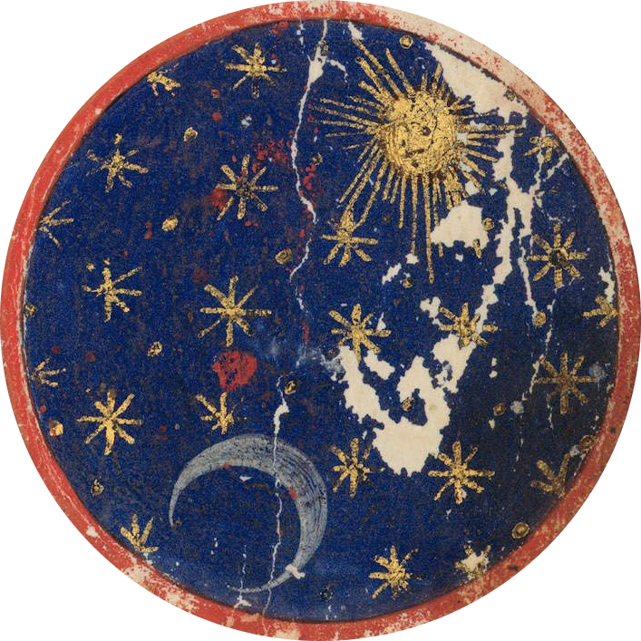
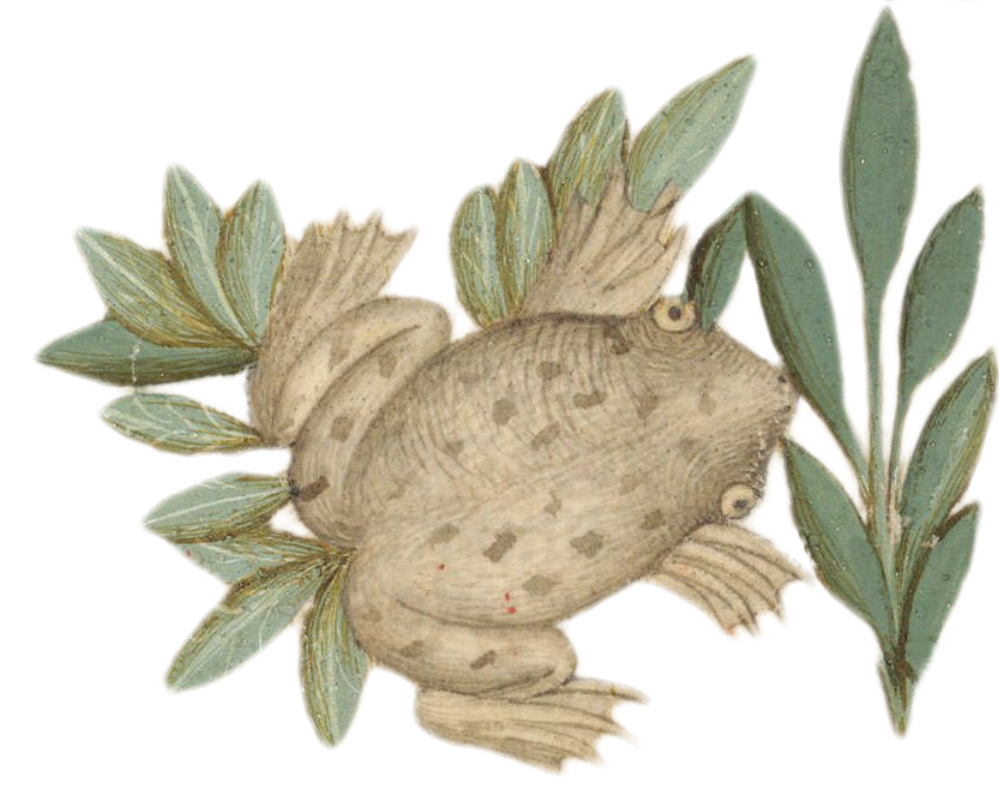

X codici
I codici dell'Acerba, oggi conservati nelle biblioteche di tutto il mondo, testimoniano la diffusione del poema e la ricchezza della sua tradizione testuale attraverso i secoli.
Consulta i codici
Edizione digitale dell'Acerba
I codici dell'Acerba, oggi conservati nelle biblioteche di tutto il mondo, testimoniano la diffusione del poema e la ricchezza della sua tradizione testuale attraverso i secoli.
Consulta i codiciA settecento anni dalla morte di Cecco d'Ascoli e a un secolo dall'edizione di Achille Crespi, l'Acerba torna a vivere attraverso una nuova edizione digitale.
Un progetto che unisce filologia e tecnologie digitali per rendere l'Acerba accessibile attraverso nuovi strumenti di ricerca.
Qui non si canta al modo delle rane,
···Qui non si gira per la selva oscura.
···Lascio le ciance e torno su nel vero.
